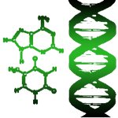
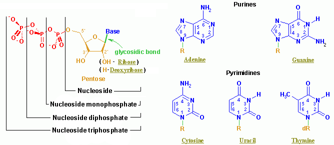
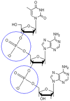
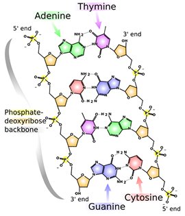
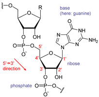

Unit 1: Biochemistry
Activity 1: Chemistry of Life
Content
Nucleic Acids
The two main types of nucleic acids are DNA and RNA. DNA is the molecule that provides the genetic instructions that are found in each cell in your body. RNA is similar in structure but is involved in making proteins for the body.
DNA Structure
DNA stands for deoxyribonucleic acid. DNA carries hereditary information that is passed on from one generation to the next. It is found in all organisms – from bacteria to plants to mammals. It holds the chemical message for producing every part of the organism. It regulates life by carrying the directions for growth, repair and replacement of cells and their parts. Let’s look at DNA in more detail.
DNA is the genetic material that carries all the instructions to make an individual. It is found in the nucleus of every cell in the body. DNA carries the instruction to make everything about you – your proteins, hair colour, eye colour, etc. There are a lot of instructions, so in order for all the information to fit, DNA is packaged tightly in the cell in the form of chromatin. However, when it is unwound and stretched out, it looks like a ladder that has been twisted. This structure is called the DNA double helix. |
 DNA Double Helix – A Twisted Ladder |
Did you know?
| You are made up of trillions of cells. Each of those cells carries your DNA. That is a lot of DNA, and if stretched out end to end, it could reach from the earth to the moon. |
Nucleotides
DNA is a polymer made up of repeating monomer units called nucleotides. A nucleotide consists of a five carbon sugar (ribose), a nitrogen base, and a phosphate group. There are 4 nitrogen bases that exist in DNA. The bases are either purines or pyrimidines. Purines include guanine and adenosine. Pyrimidines include cytosine and thymine.
 A sugar (pentose) + a nitrogenous base + phosphate = nucleotide |
These nitrogen bases are found facing the middle and form the rungs of the DNA ladder. The sugar (pentose) and phosphate groups make up the sides of the ladder. The sides of the ladder are referred to as the sugar-phosphate backbone of the DNA double helix. Each nucleotide is attached to the next nucleotide through the sugar-phosphate backbone by a hydrolysis reaction forming a phosphodiester linkage. The blue circles indicate the phosphate groups attached to the five carbon ring ribose structure. |
 |
To recap, the sugar-phosphate backbone makes the sides of the ladder and the rungs are made of the 4 nitrogenous bases. Their names are often represented by the letter of name (A, C, G, & T). The actual ladder itself is made of two strands of DNA which is why it is called a double helix. Each strand attaches by the nitrogen bases that pair in the middle (the rungs of the ladder). The nitrogenous bases are held together by H-bonds in the middle of the ladder. A pairs with T – held by 2 H-bonds Note that a purine pairs with a pyrimidine forming H-bonds with amino, and carbonyl functional groups. |
Base pairing in DNA |
RNA Structure RNA differs from DNA in that it is single stranded. It has a hydroxyl group on carbon 2 of the ribose sugar while DNA does not. Also RNA does not contain the pyrimidine thymine. Thymine is replaced by another pyrimidine - uracil in its structure. RNA molecules are important in protein synthesis. |
 A RNA nucleotide |
 |
Learn more about Nucleic Acids. |
|---|
 Portfolio:
Portfolio:
Notes help prepare you for tests. Keep all of your notes in your portfolio. Be prepared to submit your portfolio notes and organizers to your teacher for assessment at various times during the course.
Use your portfolio to make notes on DNA structure and RNA Structure.
This is a disclaimer. External Resources will open in a new window. Not responsible for external content.
Unless otherwise indicated, all images in this Activity are from the public domain or are © clipart.com or Microsoft clipart and are used with permission.